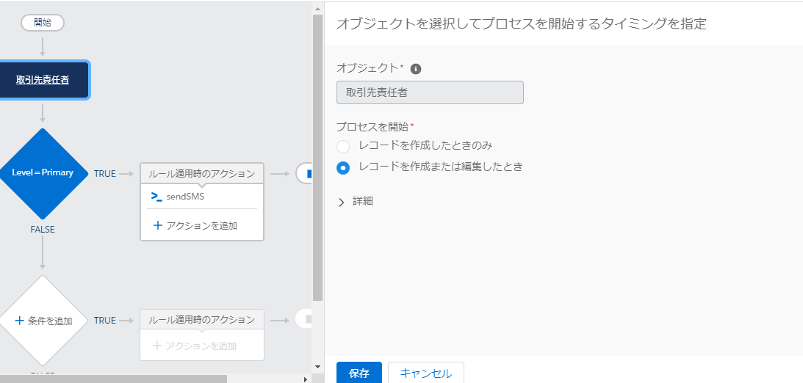
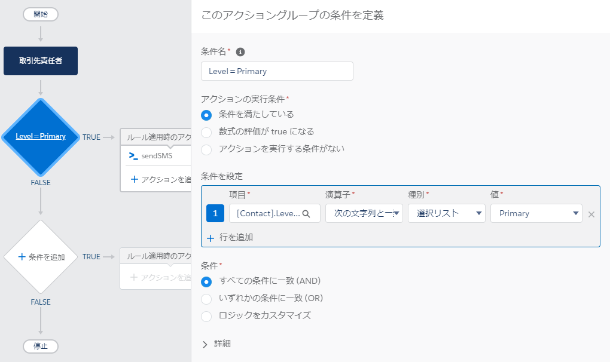
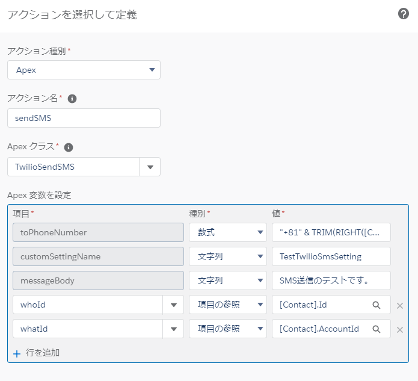
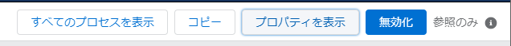
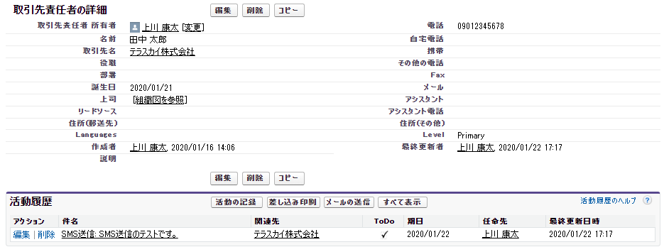

プロセスビルダーによるSMS送信
プロセスビルダーによるSMS送信の実装方法について説明します。
プロセスビルダーの構築
プロセスビルダーの新規作成
プロセスビルダーを新規作成します。以下を参考に値を入力して下さい。

| 項目 | 必須/任意 | 入力内容 |
|---|---|---|
| プロセス名 | 必須 | 任意の名前を入力して下さい。 |
| API参照名 | 必須 | 任意の名前を入力して下さい。 |
| 説明 | 任意 | プロセスビルダーの説明を任意で入力して下さい。 |
| プロセスを開始するタイミング | 必須 | プロセスビルダーの起動タイミングを選択してください。 |
オブジェクトの選択
プロセスビルダーを起動するオブジェクトと開始タイミングを選択してください。

条件を追加
アクションを呼ぶための条件を定義してください。

アクションを定義
アクションを選択して定義してください。 Apex変数の設定については表をご参照ください。

| 項目 | 必須/任意 | 入力内容 |
|---|---|---|
| アクション種別 | 必須 | Apexを選択して下さい。 |
| アクション名 | 必須 | 任意の名前を入力して下さい。 |
| Apex クラス | 必須 | TwilioSendSMSを選択して下さい。 |
| toPhoneNumber | 必須 | 宛先の電話番号を入力して下さい。※現状、E.164 フォーマット（日本の携帯電話番号例：+819012345678）のみ対応可能となります。データがE.164 フォーマットでない場合は、データの変更または数式を組む必要があります。数式の演算子と関数 |
| messageBody | 必須 | SMSで送信するメッセージを入力して下さい。 |
| customSettingName | 必須 | カスタム設定「TwilioSmsSetting」で作成したレコードの「Name」を入力して下さい。 |
| whatId | 任意 | 行を追加で変数として追加可能です。SMS送信の履歴を活動履歴として残したいオブジェクト(取引先、商談、キャンペーン、ケース、カスタムオブジェクトなど、人以外のオブジェクト)のIDを入力して下さい。 |
| whoId | 任意 | 行を追加で変数として追加可能です。SMS送信の履歴を活動履歴として残したいオブジェクト(リードや取引先責任者など、人を表すオブジェクト)のIDを入力して下さい。 |
Warning
whoIdとwhatIdに入れるオブジェクトのIDがnullの場合はエラーになるため、参照先のデータが存在することを確認してください。 whoIdとwhatIdについてはこちらをご参照ください。 Task|Salesforce開発者ガイド
プロセスビルダーの有効化
プロセスビルダーの作成が完了したら、最後に右上の有効化ボタン押します。 確認のポップアップが出ますので、Confirmを押して有効化します。
右上の有効化ボタンが無効化ボタンに変わっていれば完了です。

プロセスビルダーの起動
先ほど、作成したプロセスビルダーを起動する条件になるようにレコードを更新します。プロセスビルダーで設定した宛先「toPhoneNumber」に対して、メッセージ「messageBody」が送信されます。TwilioのSMS送信キューに登録された段階で、プロセスビルダー作成の際に渡したパラメータ「whatId」と「whoId」に関連づく活動履歴が、SMS送信履歴として1件作成されます。
